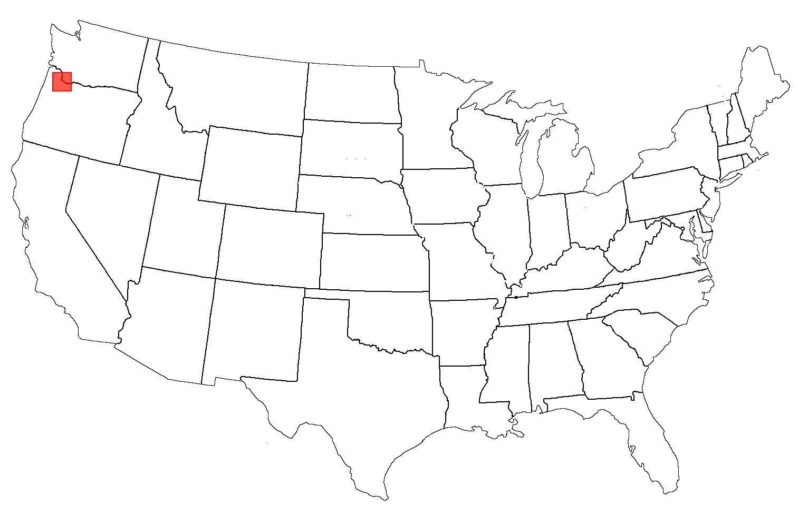
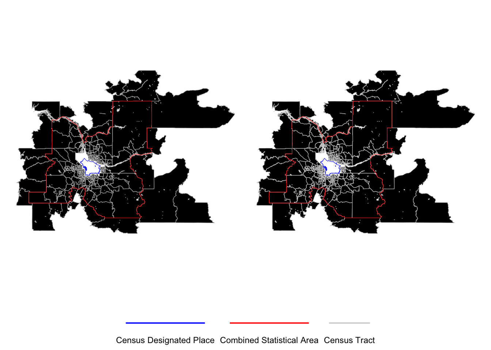
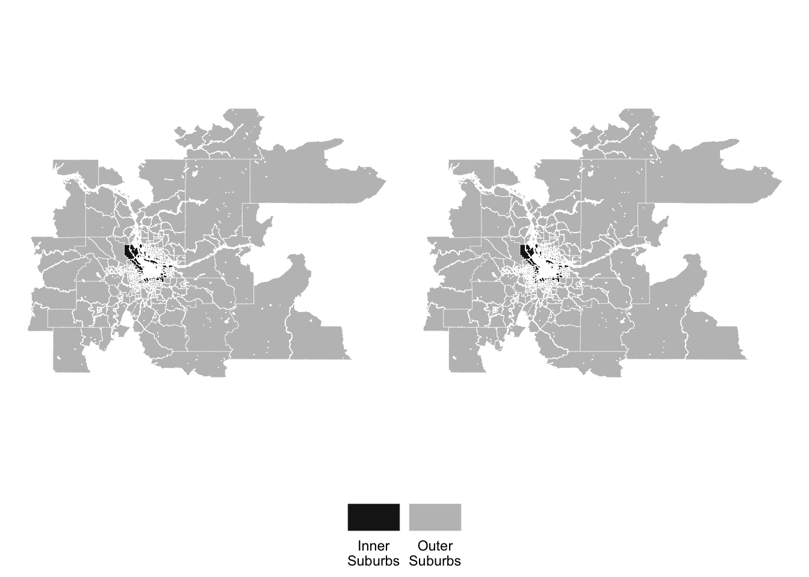
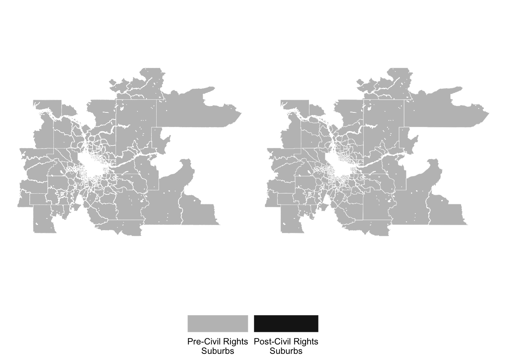
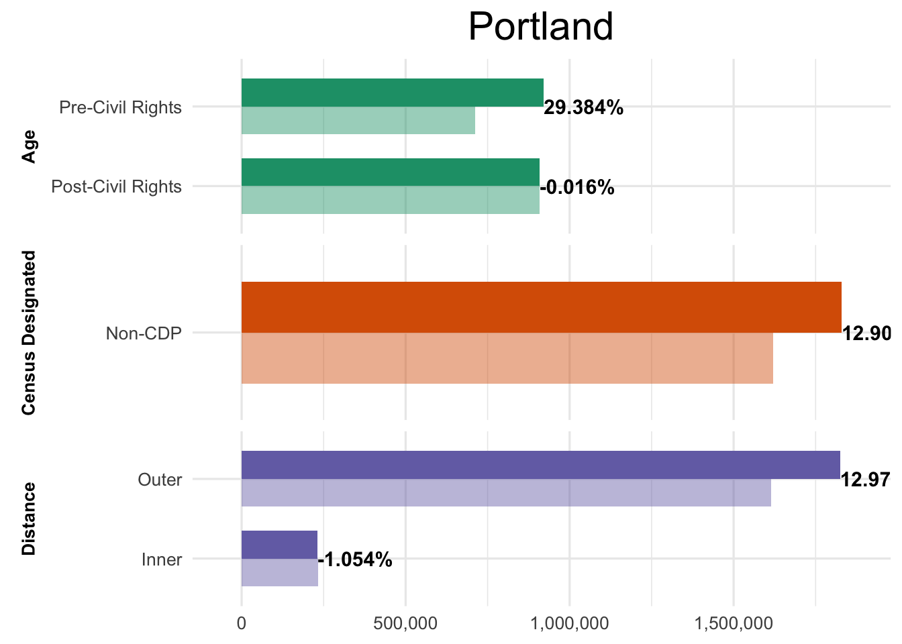
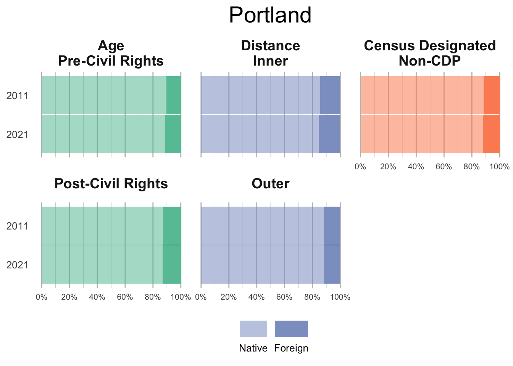
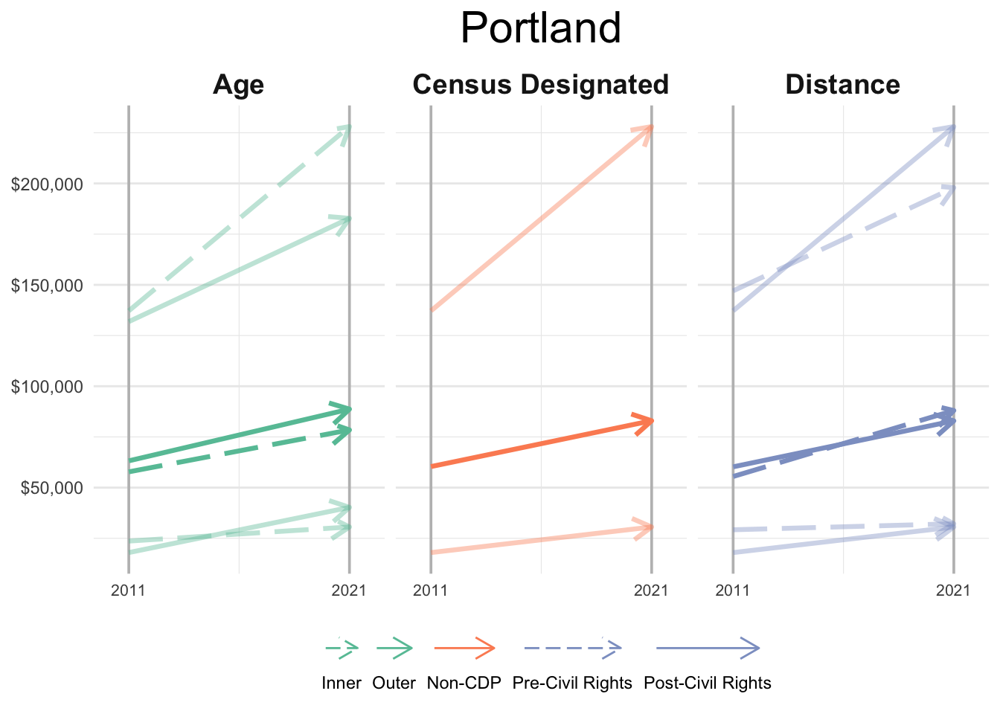

Portland

The final location of study includes Portland, OR. Located on the boundary between Oregon and Washington, Portland’s suburbs transcend the boundaries of two states Also, the city operates with a distinctive urban growth boundary which seeks to regulate sprawl and development associated with suburban expansion.
Portland and its suburbs
Census-Designated Suburbs

Distance-Defined Suburbs

Age-Based Suburbs

Changes in Population
Total Population
The aggregated total population of each suburban form is shown below. Figure 4 illustrates the population total in 2011 with the total in 2021 included above. Interestingly, Portland’s population steadily increased over the 10 years, showing growth in Pre-Civil Rights Suburbs and in Outer Suburbs, while decreasing in Post-Civil Rights Suburbs and in Inner Suburbs.

Changes across race/ethnicity
Table 1 demonstrates the population change for each ethnoracial group. The percentage change of the total population is described for each definition. Across suburban Portland, the only group to decrease in population was the non-Hispanic White population, while all other groups increased in size. The largest increases were seen in the Hispanic and Asian categorized groups.
| Suburban | Type | NH-White | NH-Black | Hispanic | Asian | Small Group |
|---|---|---|---|---|---|---|
| Age | Pre-CR | 12.94 | 36.71 | 53.60 | 61.73 | 25.55 |
| Post-CR | -3.45 | 26.54 | 12.44 | 27.55 | 17.24 | |
| Census Designated | Non-CDP | 4.91 | 31.51 | 32.24 | 41.51 | 21.91 |
| Distance | Inner | -10.67 | 7.22 | 34.48 | 15.19 | 15.74 |
| Outer | 5.00 | 31.39 | 32.22 | 41.46 | 21.91 |
Native and Foreign Born
The proportion of native and foriegn born populations across each suburban setting for 2011 and 2021 is illustrated below. Data for 2011 are positioned above 2021 in each chart to illustrate the change. The foreign-born population increases across all definitions of Portland.

Median Household Income
The final projection describes how the household income at tract level has changed throughout the ten-year period. Figure 6 shows the tract with the lowest and highest median household income in Portland, and also the median value too. Inner Suburbs and Pre-Civil Rights suburbs were the only settings not to increase their lowest median household income tract while all others increased.
